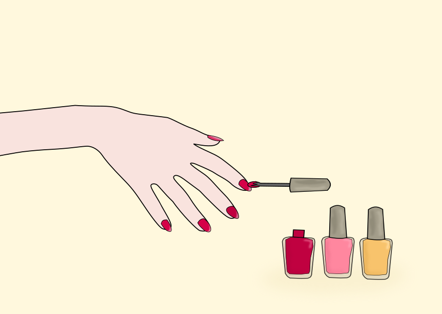

Inside Nails and Tails: Nail Care for People and Pups
L2–L3 Beyond the Appearance: What Nails Can Tell Us

j4p4n / Openclipart (CC0)
Most of us only think about our nails when one chips or breaks, but they could also give early clues about our health. Mayo Clinic Staff (2024) recommends seeing a health care provider if we notice color changes or dark streaks, nails that curl or thicken, nails separating from the skin, or swelling around the nail. At Nails and Tails, nail technician Sarah noticed horizontal ridges on a client's nails and encouraged him to mention them to his health care provider. A few weeks later, he returned and told her the ridges were caused by a nutrient deficiency, and thankfully, nothing more serious. Our dogs can't tell us when their nails bother them, so it's up to the owner and professionals to notice. For dogs, the biggest warning sign is length. Nails that grow too long can splay the toes, reduce traction, and snag, split, or tear (Meyers, 2026; Mitchell, 2024).
Our dogs can't tell us when their nails bother them, so it's up to the owner and professionals to notice.
L2 Knowing Where to Stop
Trimming nails the right way matters as much as trimming them often. At home, that means cutting our nails straight across with sharp clippers that won't crimp or tear the nail, and leaving our cuticles in place, since they help protect the skin around the nail from infection (Mayo Clinic Staff, 2024). If the edges feel sharp after clipping, a nail file can smooth them and help prevent chips and snags. When it comes to dogs, the most important thing is knowing where to stop, which means avoiding the quick. Since the quick can be hard to see, it helps to trim from underneath at a 45-degree angle and take off a little at a time, using several small cuts on dark nails. When a gray to pink oval appears on the cut surface, it's time to stop. It's also smart to keep styptic powder nearby in case of bleeding and to remember the dewclaws, which never touch the ground and need regular trims (Rokyta, 2026). Groomers at Nails and Tails use this small-cut technique on dark nails to keep every trim safe and smooth.
L4–L5 Clean Tools and Calm Clients
Good nail care also depends on the tools. At Nails and Tails, every tool is cleaned and disinfected after each client, and single-use items such as nail files and buffers are discarded or sent home with the client. The human and dog sides of the salon each have their own set of tools, and the two sets are never shared. For dogs, clean tools are only half the job. Many dogs are nervous about clippers and grinders, so the goal is to make the tools feel familiar before a trim ever starts. Owners can practice at home in short sessions of just a minute or two, a few days a week, pairing each touch of the paw with a small treat. To introduce a grinder, owners can turn it on at its lowest speed, offer a few treats, and then turn it off. Over time, a dog can learn to accept the sound, then the vibration, and finally the grinder touching a nail (Lindell et al., 2025; Madson, 2025). Groomers at Nails and Tails follow the same steps with nervous first-timers, sometimes grinding just one nail per visit. Nails and Tails and its staff are fictional. All nail care facts come from the sources listed below.
Sources
- Lindell, E., Feyrecilde, M., Llera, R., & Buzhardt, L. (2025, September 12). Taking the stress out of nail trimming for dogs. VCA Animal Hospitals. https://vcahospitals.com/know-your-pet/nail-trimming-for-dogs
- Madson, C. (2025, April 1). How to get your dog used to nail trims. Preventive Vet. https://www.preventivevet.com/dogs/how-to-get-a-dog-used-to-nail-trims
- Mayo Clinic Staff. (2024, November 22). Fingernails: Do's and don'ts for healthy nails. Mayo Clinic. https://www.mayoclinic.org/healthy-lifestyle/adult-health/in-depth/nails/art-20044954
- Meyers, H. (2026, June 1). How to trim your dog's nails at home. American Kennel Club. https://www.akc.org/expert-advice/health/how-to-trim-dogs-nails-safely/
- Mitchell, S. C. (2024, December 19). Dog broken nail: First aid and prevention. PetMD. https://www.petmd.com/dog/care/first-aid-broken-nails-dogs
- Palika, L. (2021, March 31). Nail anatomy 101: Keep trims safe, not scary. Fear Free Happy Homes. https://www.fearfreehappyhomes.com/nail-anatomy-101-keep-trims-safe-not-scary/
- Rokyta, D. (2026, February 25). How to clip a dog's nails. Washington State University Veterinary Teaching Hospital. https://hospital.vetmed.wsu.edu/2026/02/25/how-to-clip-a-dogs-nails/